15.4 TRANSFORMATIONS
The term transformation is generally used when some function of the measured response variable y is used in place of y in a model. For example, a square root transformation may be used in a multiple linear regression model to fit a model of the form
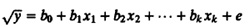
It may appear that transformation is a subset of the curvilinear regression. However, the ideas discussed in this section apply not only to the regression model but to other models as well, such as those used in factorial experimental designs discussed in Part IV. Thus, the discussion of transformations deserves a special section of its own.
There are three cases where a need for transformation should be investigated. First, a transformation should be used if it is known from physical considerations of the system that a function of the response rather than the response itself is a better variable to use in the model. For example, if an analyst has measured the interarrival times y for requests and it is known that the number of requests per unit time (1/y) has a linear relationship to a certain predictor, then 1/y transformation should be used. We will see several such examples during experimental design and analysis. Second, a transformation should be investigated if the range of the data covers several orders of magnitude and the sample size is small. In other words, if ymax/ymin is large, a transformation of the response that reduces the range of variability should be investigated. Third, transformations are used if the homogeneous variance (homoscedasticity) assumption of the residuals is violated, as discussed next.
If a scatter plot of the residual versus predicted response 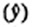 shows that the spread in the residuals is not homogeneous, this indicates that the residuals are still functions of the predictor variables. The assumed linear model does completely describe the relationship, and a transformation of the response may help solve the problem. To find the transformation, compute the standard deviation of residuals at each value of 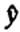 (assuming that there are more than one residuals at each value) and plot the standard deviation as a function of the mean 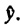 If there are several replicated measurements of response variable y for each given set of predictor variable values, then this plot can be prepared even before fitting a model. For each set of replicated observations, the standard deviation s and the mean 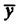 is computed and plotted on a scatter diagram. Suppose the relationship between the standard deviation s and the mean is
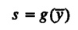
Then a transformation of the form
w = h(y)
may help solve the problem, where
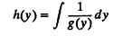
A few transformations that have been found useful in practice are as follows:
- • Log Transformation: If the standard deviation’s is a linear function of the mean (s = aÿ), as shown in Figure 15.2a, a logarithmic transformation of the form w = lny may help stabilize the variance. This transformation was obtained as follows:
g(y) = ay
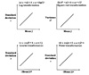
FIGURE 15.2 Standard deviation versus mean response graphs can be used to determine the transformation required.
and therefore
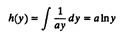
The logarithmic transformation is useful only if the ratio ymax/ymin is large. For a small range the log function is almost linear, and so the analysis of the transformed variable will be identical to that with the original variables.
- • Square Root Transformation: A Poisson distributed variable has mean equal to the variance
 A plot of variance versus mean for such a variable is a straight line, as shown in Figure 15.2b. Notice the we have shown s2 on the vertical aids (instead of s). In this case, a transformation of the form w = 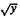 helps stabilize the variance.
A plot of variance versus mean for such a variable is a straight line, as shown in Figure 15.2b. Notice the we have shown s2 on the vertical aids (instead of s). In this case, a transformation of the form w = 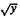 helps stabilize the variance.
- • Arc Sine: If y is a proportion or percentage, a transformation of the type sin–1 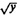 may be helpful.
- • Omega Transformation: This transformation is popularly used when the response y is a proportion. With this transformation, the transformed value w is obtained from original values of y as follows:
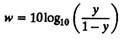
The transformed values of w are said to be in units of dB (decibels). The term comes from signaling theory, where the ratio of output power to input power is measured in decibels. Omega transformation converts fractions between 0 and 1 to values between –∞ and + ∞. This transformation is particularly helpful if the fractions are very small or very large. If the fractions are close to 0.5, a transformation may not be required.
- • Power Transformation: In this a power of the response variable, for instance, ya, is regressed on the predictor variables. This transformation can be used if in testing the homogeneity of variance it is found that the standard deviation of residuals se is proportional to y1–a. This relationship is shown in Figures 15.2c and 15.2d for a = –1 and general a, respectively.
These transformations and a few others are listed in Table 15.9. In each case, y may also be shifted, and y + c (with some suitable c) may be used in place of y. This shifting is useful if there are negative or zero values and if the transformation function is not defined for these values.
If the value of the exponent a in a power transformation is not known, the following transformation family, called Box-Cox family of transformations, can be used:
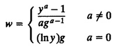
Where g is the geometric mean of the responses:
g = (y1y2...yn)1/n
TABLE 15.9 Transformations to Stabilize the
Variance
|
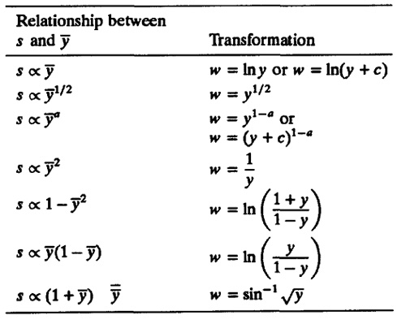
){kind=link}
){kind=link}